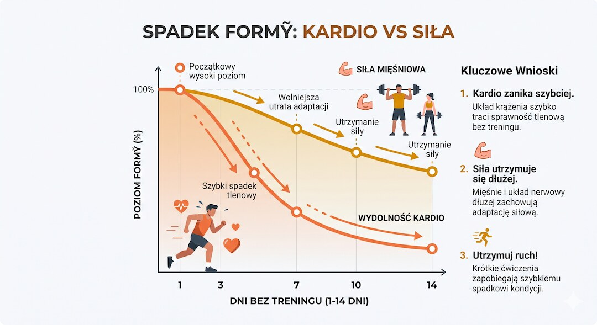
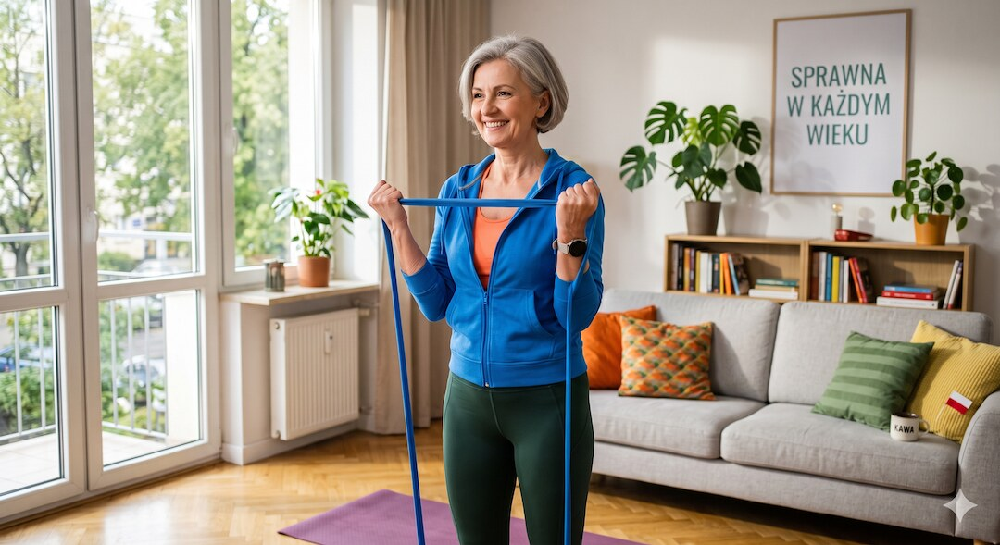
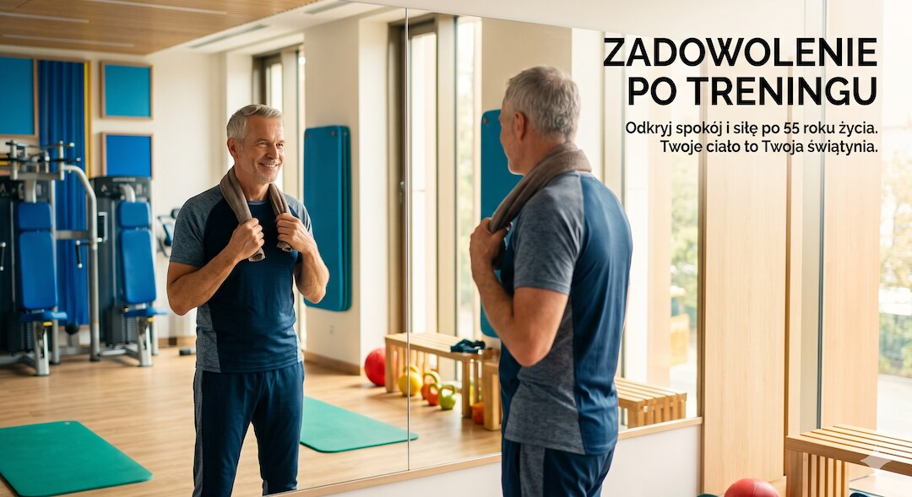

Wyjazd, choroba, korek w robocie albo zwykłe odpuszczenie. Dwa tygodnie bez treningu zdarzają się każdemu i nie są żadną katastrofą. Ale ciało nie stoi w miejscu: jedne rzeczy tracisz w kilka dni, inne zostają z Tobą tygodniami. Tu masz konkrety, bez straszenia i bez ściemy.
Szybka odpowiedź
Po dwóch tygodniach bez treningu zwykle nie tracisz realnie mięśni, ale szybciej spada kondycja i wrażliwość na insulinę, więc po 50-tce najlepiej nie schodzić do zera i zostawić minimum ochronne: spacer po posiłku, gumę oporową, ćwiczenia mobilności albo 10-15 minut lekkiego ruchu dziennie.
Kluczowe wnioski
- Po dwóch tygodniach siła i masa zostają prawie nietknięte. To, co wygląda na skurczony mięsień, to głównie woda i glikogen, które wracają w kilka dni.
- Kondycja tlenowa leci najszybciej: VO2max i objętość osocza spadają już w dwa tygodnie.
- Cukier i wrażliwość na insulinę psują się w kilka dni samego siedzenia, nawet bez utraty mięśni.
- Po 50-tce tracisz szybciej i wolniej wracasz. To tak zwana oporność anaboliczna, dlatego długie przerwy kosztują bardziej.
Czy po dwóch tygodniach naprawdę tracisz mięśnie?
Dobra wiadomość na start: dwa tygodnie wolnego nie zabiorą Ci mięśni. U osób trenujących siłowo po takiej przerwie siła i masa zostają prawie nietknięte. To „mniejsze” ramię w lustrze to zwykle mniej glikogenu i wody w mięśniu, a nie utrata samej tkanki.
U bardzo zaawansowanych zawodników włókna szybkokurczliwe potrafią po dwóch tygodniach skurczyć się o kilka procent. Ale masa ciała często zostaje bez zmian, a to mocny sygnał, że chodzi o zapasy glikogenu i wody, nie o realny zanik mięśnia.
Krótko: dwa tygodnie nie „spalą” efektów wielu miesięcy. Mięsień jest cierpliwy. Schody zaczynają się dopiero wtedy, gdy przerwa rozciąga się na tygodnie i miesiące.
Jeśli chcesz utrzymać siłę mimo przerw, połącz ten tekst z planem treningu siłowego po 50-tce.
Dlaczego kondycja spada szybciej niż siła?
Tu jest mniej wesoło. Kondycja odpuszcza szybciej niż siła. U wytrenowanych sportowców już dwa tygodnie bez treningu wyraźnie obniżyły pułap tlenowy (VO2max), czas do wyczerpania i maksymalną objętość wyrzutową serca. W górę poszły za to tętno maksymalne i masa ciała.
Powód jest czysto fizjologiczny. Gdy przestajesz trenować, kurczy się objętość krwi i osocza. Klasyczne badania notują spadek osocza o około 5% już po 14 dniach, a przy dwóch–czterech tygodniach nawet 9–12%. Mniej krwi w obiegu to mniej tlenu dowożonego do mięśni z każdym uderzeniem serca.
Dlatego po dwóch tygodniach ten sam bieg albo wejście po schodach potrafi zwalić z nóg. To nie słabość charakteru, tylko rzadsza krew i serce, które na razie pompuje mniej oszczędnie.
| Co spada? | Kiedy to czuć? | Jak szybko wraca? |
|---|---|---|
| Kondycja tlenowa (VO2max) | Najszybciej: zadyszka może wrócić już po około 2 tygodniach. | Zwykle po kilku tygodniach regularnego ruchu. |
| Siła maksymalna | Wolniej: u wielu osób trzyma się lepiej niż kondycja. | Często bardzo szybko, dzięki pamięci mięśniowej. |
| Wrażliwość na insulinę | Bardzo szybko: pogarsza się już po kilku dniach bezruchu. | Poprawia się po powrocie do spacerów i treningu. |
Szerszy kontekst znajdziesz w poradniku o VO2max, kondycji i starzeniu po 50-tce.

Co dzieje się z Twoim cukrem i insuliną?
Tę część często się pomija, a dla zdrowia jest najważniejsza. Wrażliwość na insulinę spada nie po tygodniach, lecz po kilku dniach samego bezruchu. Mięśnie, które przestają pracować, gorzej wyłapują glukozę z krwi, więc cukier po posiłku trzyma się wyżej i dłużej.
Badania nad ograniczeniem ruchu pokazują to wprost: zejście poniżej około 1500 kroków dziennie przez dwa tygodnie pogarsza wrażliwość na insulinę i uruchamia drobny zanik mięśni, zarówno u młodych, jak i u starszych. Nie musisz chorować. Wystarczy, że przestajesz się ruszać.
Dla kogoś z podwyższonym ryzykiem cukrzycy to ważny sygnał. Regularny ruch codziennie „resetuje” gospodarkę cukrową. A ten efekt gaśnie zaskakująco szybko, gdy odpuszczasz.
Gdy przerwa łączy się z podjadaniem, warto wrócić też do tekstu o ukrytym cukrze po 50-tce.
Dlaczego po 50-tce tracisz formę szybciej?
Wiek zmienia reguły. Po 50-tce mięśnie są bardziej oporne anabolicznie, czyli słabiej reagują na trening i na białko z jedzenia. Badania pokazują, że już dwa tygodnie mniejszej aktywności u starszych osłabiają odpowiedź mięśni na posiłek białkowy i przyspieszają ich zanik mocniej niż u młodszych.
Do tego dochodzi sarkopenia, czyli powolna utrata mięśni z wiekiem. Każda dłuższa przerwa działa wtedy jak dolewanie oliwy do ognia: startujesz niżej i wolniej wracasz. To nie powód do paniki, tylko do tego, żeby nie odpuszczać na długo.
Wniosek dla pięćdziesięciolatka: dwa tygodnie wolnego to wciąż bezpieczny margines. Ale jeśli musisz odpocząć, wpleć choćby minimum ruchu: spacer, kilka przysiadów, gumę oporową, żeby nie schodzić do zera.
Przy dłuższym odpoczynku pilnuj podaży białka według zasad z artykułu ile białka po 50 roku życia.
- Po dłuższej przerwie wracaj łagodniej niż przed nią — ciało po 50-tce wolniej się adaptuje.
- Zadbaj o białko w każdym posiłku, bo starszy mięsień gorzej je „słyszy”.
- Nawet 10–15 minut ruchu dziennie wyraźnie spowalnia straty.

Czemu wyglądasz na mniejszego, choć nie schudłeś?
Klasyk pierwszego tygodnia: mięśnie wyglądają na spłaszczone, a waga potrafi nawet drgnąć w górę. Brzmi sprzecznie, a jest logiczne. Trenowany mięsień trzyma glikogen i sporo wody. Gdy przestajesz ćwiczyć, te zapasy maleją i mięsień optycznie się kurczy.
Waga może urosnąć, bo bezruch zmienia bilans energii i gospodarkę wodną. W badaniach po dwóch tygodniach masa ciała sportowców rosła, mimo że procent tłuszczu się nie zmieniał. To nie „przytycie” w klasycznym sensie, tylko przesunięcia wody i glikogenu.
Najważniejsze: to się cofa. Po kilku treningach mięśnie znów napełniają się glikogenem i wodą, „pompa” wraca, a sylwetka twardnieje. Nie rób więc dramatu z lustra po dwóch tygodniach kanapy.

Jak szybko wrócisz do formy po przerwie?
Tu jest największy plus tej historii: powrót idzie dużo szybciej niż budowanie formy od zera. Mięśnie mają coś w rodzaju pamięci. Zachowane dodatkowe jądra komórkowe i utrwalone wzorce nerwowe sprawiają, że raz zdobyte adaptacje wracają błyskawicznie, gdy znów ruszasz do pracy.
W praktyce po dwutygodniowej przerwie pierwszy czy drugi trening może wydać się słabszy, ale forma odbija szybciej, niż się spodziewasz. Kondycja zwykle potrzebuje kilku tygodni, żeby wrócić na dawny pułap. Siła często wraca jeszcze prędzej.
Zasada jest prosta: nie nadrabiaj „karnie” straconych dni. Wejdź spokojnie, daj sobie dwa–trzy treningi na rozruch i pozwól pamięci mięśniowej zrobić swoje. Pośpiech na starcie to najkrótsza droga do kontuzji.
Plan spokojnego restartu rozpisuję szerzej w przewodniku powrót do formy po 50.
Kiedy dwa tygodnie przerwy faktycznie Ci pomagają?
Nie każda przerwa to strata. Czasem dwa tygodnie luzu to dokładnie to, czego ciało potrzebuje. Po okresie ciężkich treningów krótki odpoczynek regeneruje stawy, ścięgna i głowę, zbija przemęczenie i pozwala wrócić mocniejszym, niż gdybyś brnął przez zmęczenie na siłę.
Podobnie przy kontuzji czy infekcji: wymuszony postój jest mądrzejszy niż udawanie, że nic się nie dzieje. Mały, przejściowy spadek kondycji to żadna cena wobec ryzyka pogłębienia urazu albo przeciągania choroby na kolejne tygodnie.
Sęk w tym, żeby była to przerwa zaplanowana, a nie zsuwanie się w bezruch na stałe. Dwa tygodnie z głową działają jak reset. Dwa miesiące „jakoś samo wyszło” to już inna bajka.
Najczęściej zadawane pytania
Czy dwa tygodnie bez siłowni to dużo?
Dla mięśni zwykle nie jest to dramat, szczególnie jeśli wcześniej trenowałeś regularnie. Bardziej zauważysz gorszą kondycję, mniejszą pompę mięśni i słabszą tolerancję wysiłku. Po 50-tce warto jednak zostawić minimum ruchu: spacer, gumy albo lekką mobilność.
Jak szybko spada kondycja (VO2max) po odstawieniu treningu?
U osób wytrenowanych spadek VO2max może być widoczny już po około dwóch tygodniach. Główny powód to mniejsza objętość osocza i słabszy transport tlenu. Dobra wiadomość: po powrocie do regularnego ruchu kondycja zwykle odbija w kilka tygodni.
Czy osoby po 50-tce tracą formę szybciej?
Tak, ryzyko jest większe, bo starsze mięśnie gorzej reagują na brak ruchu i białko. Nie oznacza to paniki po urlopie. Oznacza tylko, że po 50-tce lepiej nie schodzić do zera: codzienny spacer i kilka ćwiczeń oporowych robią dużą różnicę.
Czy mięśnie zamieniają się w tłuszcz po odstawieniu treningu?
Nie. Mięsień i tłuszcz to różne tkanki, jedna nie zamienia się w drugą. Po przerwie mięśnie mogą wyglądać płasko przez mniej glikogenu i wody, a tłuszcz rośnie dopiero wtedy, gdy bezruch łączy się z nadwyżką kalorii.
Źródła
- Chen i wsp. (2022): dwa tygodnie detrainingu obniżają wydolność krążeniowo-oddechową i sprawność mięśniową u sportowców wytrzymałościowych — European Journal of Sport Science
- Mujika i Padilla: Detraining — utrata adaptacji fizjologicznych i sprawnościowych (część II) — PubMed
- Metaanaliza: wpływ krótko- i długoterminowego detrainingu na VO2max u sportowców — PMC
- Przegląd: krążeniowo-oddechowe i metaboliczne skutki detrainingu (objętość osocza, Coyle, Houmard) — PMC
- Wpływ dwóch tygodni przerwy w treningu na siłę mięśni kolana u sprinterów — PMC
- Czterotygodniowy detraining a wrażliwość na insulinę i profil zapalny u starszych kobiet — PMC
- Ograniczenie aktywności (step-reduction) a oporność anaboliczna i zanik mięśni u starszych mężczyzn — PMC
- Siła i napęd dowolny zachowane po dwóch tygodniach detrainingu — badanie pobudliwości korowo-rdzeniowej — PMC
Uwaga: Artykuł ma charakter informacyjny i edukacyjny. Nie zastępuje konsultacji lekarskiej, diagnozy ani leczenia.